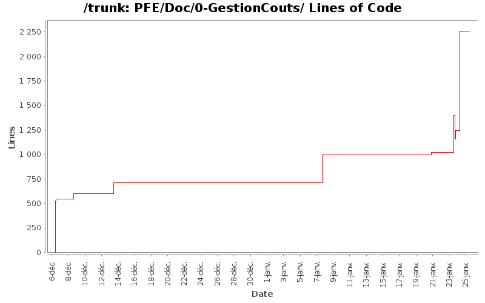

| Author | Changes | Lines of Code | Lines per Change |
|---|---|---|---|
| Totals | 39 (100.0%) | 6305 (100.0%) | 161.6 |
| hoc5783 | 14 (35.9%) | 2509 (39.8%) | 179.2 |
| nakara.rahma | 7 (17.9%) | 2230 (35.4%) | 318.5 |
| fab0670312047 | 15 (38.5%) | 1508 (23.9%) | 100.5 |
| josianegarcia66 | 3 (7.7%) | 58 (0.9%) | 19.3 |
+ MON DERNIER COMMIT POUR LES RAPPORTS !
(Fabien, garde ces documents si tu y tiennes tellement, perso je n'en veux pas :p)
Philippe
1 lines of code changed in 1 file:
+ Dernières modifs du rapport de gestion des coûts.
113 lines of code changed in 1 file:
+ Mise en forme du rapport avec corrections.
823 lines of code changed in 1 file:
+ correction orthographe , synthaxe, grammaire
1850 lines of code changed in 4 files:
+ Voilà le rapport gestion des coûts.
+ Veuillez faire une relecture pour les fautes de français.
Philippe
1130 lines of code changed in 6 files:
+ Intégration des fichiers ajouté par Rahma
+ Correction d'un chemin absolu en chemin relatif
8 lines of code changed in 1 file:
+ S'il te plait arrête de travailler sur la même partie que moi car ça créer de$
$le mois prochain surement). Donc il n'y a pas d'incohérence entre les 2 taux si tu as bien lu le rapport (2010 c'est officiel et 2011 c'est une prévision statistique).
100 lines of code changed in 1 file:
+ Prise en compte des modif de chacuns
+ Correction orthographe et syntaxe
25 lines of code changed in 1 file:
IMPORTANT : Fabien, tu es incorrigible ! Ce n'est pas que je ne fais pas de commit tous les heures, ça ne veut pas dire que je ne bosse pas ! De plus tes petits copier-coller, je sais le faire aussi ! Voire peut-être mieux puisque c'est moi qui l'a rédigé.
+ Modif de quelques valeurs sur gestion des coûts / synthèse.
+ Rédaction en cours du rapport de gestion des coûts ainsi que le calcul des indicateurs (je pense avoir une piste). Donc Fabien, si tu t'ennuis fais autres choses, ne vient pas mettre le désordre dans ma partie. Une fois, finis, tu seras libre de corrigier.
Merci de votre compréhension,
Philippe
58 lines of code changed in 1 file:
+ Correction orthographique et syntaxe
45 lines of code changed in 2 files:
+ Correction de l'introduction
13 lines of code changed in 1 file:
+ Ajout d'information sur rapport de cout
+ Correction d'adresse relative
+ Relecture
735 lines of code changed in 3 files:
+ ajout d'une intro
+ Mise en forme des calculs
+ Mise en forme de la gestion des coûts
27 lines of code changed in 1 file:
+ Ajout des questions pour calculer la VAN.
+ Ajout des définitions des indicateurs.
284 lines of code changed in 3 files:
++ changement des chemins et correction de l'intro
268 lines of code changed in 2 files:
+ petite modif
112 lines of code changed in 1 file:
+ Rajout de remarques
38 lines of code changed in 1 file:
+ Question posé en cours durant la gestion des coûts intégration des réponses sous forme de remarque
72 lines of code changed in 1 file:
+ Deplacement d'un fichier
+ Ajout du début du code du marcheur
57 lines of code changed in 1 file:
+ ajout d'info pour le taux d'intéret
22 lines of code changed in 1 file:
+ Ajout Gestion des coûts (Proposition de plan basé sur les précédents PFE)
524 lines of code changed in 5 files: